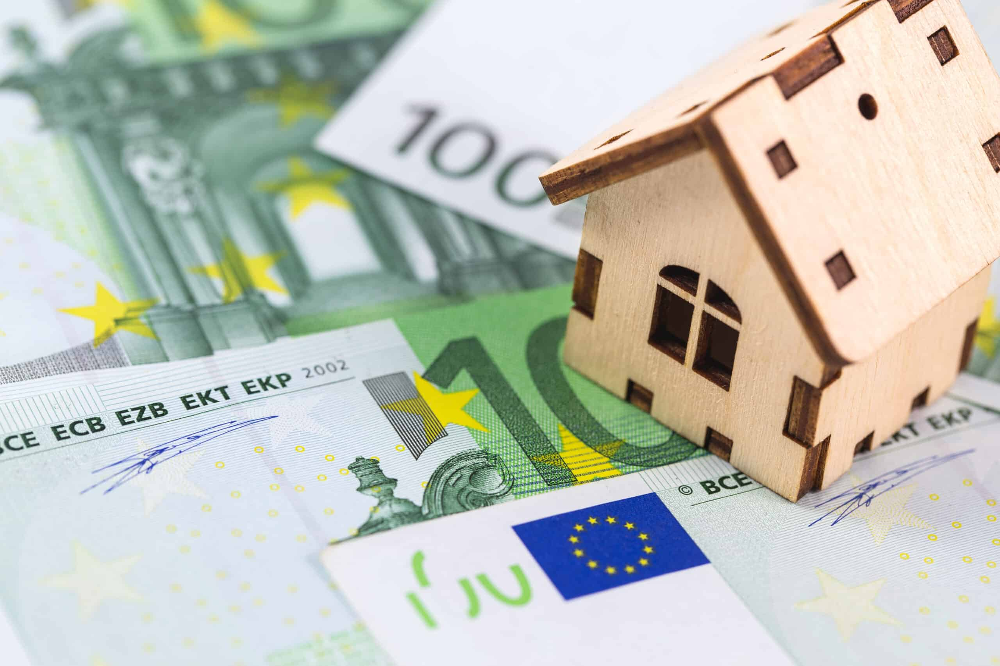

Hypotheek
Zoekt u naar een koophuis, maar heeft u onvoldoende budget om een huis te kopen naar uw wensen? Dan kan een hypotheek uitweg bieden. Maar hoe kan men dat het beste aanpakken? Op die vraag gaan we hieronder antwoord geven.
Deze webpagina van Nibud geeft veel informatie over hypotheken. Zo worden bepaalde onderwerpen uitgelegd die belangrijk zijn voor het afsluiten van een hypotheek.
Wanneer u voldoende geïnformeerd bent, kunt u in ingesprek gaan met uw bank. De bank kan u vertellen welke opties mogelijk zijn. Indien u deze opties niet bij u vindt passen, is het mogelijk een beter plan om uw hypotheekaanvraag bij een andere bank te doen.